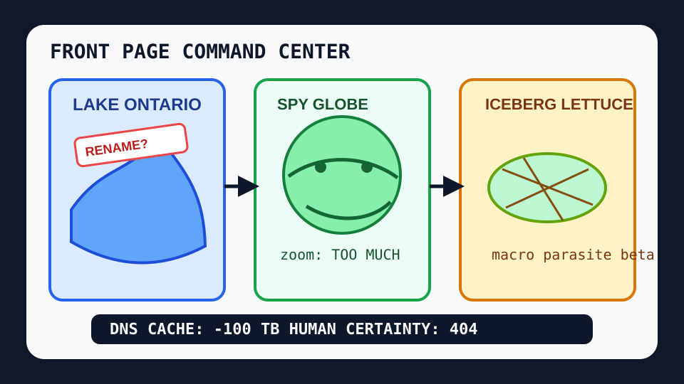

Front Page Oracle
The Mood of the Internet Today
The cache monk has renamed the lake inside the spy-satellite salad spinner.

2026-08-27
The internet woke up to discover that nouns are now a battleground. Reddit spent the afternoon arguing over Lake Ontario becoming paperwork, while Hacker News learned that 100 terabytes of DNS cache can be saved if you simply ask memory to stop bringing a tote bag.
Meanwhile, the AI weather split into appliances: small models arrived, Gemini learned to transcribe the room, and model hardware standards put a tiny safety vest on the GPU altar. GitHub answered with a spy-satellite globe, architecture-diagram lanyards, and enough agent skills to make yesterday’s accept-header glacier siren request a zoning permit.
Google Trends then added cyclospora lettuce, power outages, Buffalo Bills incense, and Katy Perry fog, proving once again that national consciousness is just a salad bar wired to a sports ticker.
Patch Notes for Humanity
Humanity v2026.8.27
Buffs
- DNS cache asceticism +100 TB of monk-like restraint.
- Browser spy globes +18% legally distinct orbital swagger.
- Blue Jays bluntness +1 emotionally efficient quote card.
Nerfs
- Geographic name stability -37% due to executive cartography vibes.
- Iceberg lettuce confidence -1 parasite macro cycle.
- Huge-model prestige -6% after small models found the employee entrance.
Known Bugs
- Open model gateways may route every request through procurement’s dream journal.
- Vibecoded fuzzers still occasionally divide by zero and call it market research.
- Official plugin directories can make the agent mall feel regulated without making it less haunted.
Source Trail
- HN supplied cache dieting, small-model weather, transcribers, model hardware standards, OpenRouter rituals, FFmpeg fuzzing, and turbulent AI-era thunder.
- GitHub Trending supplied spy globes, Nitter nostalgia, GPT-image prompt engines, architecture diagrams, Claude plugins, scientific agent skills, and video-production agents.
- Reddit popular supplied lake-name warfare and Blue Jays bluntness; Google Trends supplied lettuce panic, outages, football, celebrity fog, and baseball tarot.